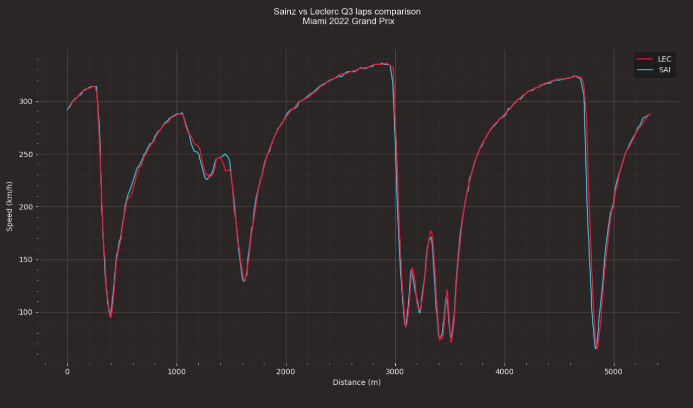

F1 Graphs
My life is everything that happens between F1 and programming. And sometimes I think I don't have enough of both and I decide to put them together. Using Python and the FastF1 package I extract real Formula 1 data and use it to create my own graphics. Sometimes I create these graphs with the mathematical package matplotlib and sometimes I decide to go one step further and use the visual library Manim to create from absolutely 0 my graphs as I imagine them in my head.
I love the ability to create a unique template for a chart and have it available to me every weekend at a click of a button with updated data.
